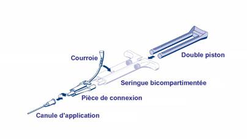

RÉSUMÉ DES CARACTÉRISTIQUES DU PRODUIT
ANSM - Mis à jour le : 05/12/2011
ARTISS, solutions pour colle
Congelées
2. COMPOSITION QUALITATIVE ET QUANTITATIVE
Composant 1:
Solution de protéines pour colle
Fibrinogène Humain (en tant que protéine coagulable) ...................................................................... 91 mg1/ml
Aprotinine (synthétique) ........................................................................................................... 3 000 UIK2/ml
Composant 2:
Solution de Thrombine
Thrombine Humaine ......................................................................................................................... 4 UI3/ml
Chlorure de Calcium .................................................................................................................... 40 µmol/ml
1 Contenu dans une concentration en protéines totale de 96 - 125 mg/ml
2 1 UPE (unité pharmacopée européenne) correspond à 1 800 UIK (Unité Inactivatrice de la Kallicréine)
3 L'activité de la thrombine est calculée en utilisant la norme internationale actuelle de l'OMS pour la thrombine.
Une seringue préremplie à double compartiment contenant une solution de protéines pour colle (avec de l'aprotinine) congelée, <1 ml><2 ml><5 ml> dans un compartiment et une solution de thrombine (avec du chlorure de calcium congelé), <1 ml><2 ml><5 ml> dans l'autre compartiment, résulte en un volume total de <2 ml><4 ml><10 ml> de produit prêt à l'emploi.
|
Après mélange |
1 ml |
2 ml |
4 ml |
10 ml |
|
|
Composant 1: solution de protéines pour colle |
|
|
|
|
|
|
Fibrinogène Humain |
45,5 mg |
91 mg |
182 mg |
455 mg |
|
|
Aprotinine (synthétique) |
1500 UIK |
3 000 UIK |
6 000 UIK |
15 000 UIK |
|
|
Composant 2: solution de Thrombine |
|
|
|
|
|
|
Thrombine Humaine |
2 UI |
4 UI |
8 UI |
20 UI |
|
|
Chlorure de Calcium |
20 µmol |
40 µmol |
80 µmol |
200 µmol |
ARTISS contient du facteur XIII humain copurifié avec le fibrinogène humain dans des limites de 0,6 à 5 UI/ml.
Pour la liste complète des excipients, voir rubrique 6.1.
Solutions pour colle.
Congelées
Solutions incolores à jaune pâle et limpides à légèrement troubles.
4.1. Indications thérapeutiques
ARTISS est indiqué en tant que colle pour tissus pour faire adhérer/ coller des tissus sous-cutanés en chirurgie plastique, reconstructrice et en chirurgie des brûlés, en tant que remplaçant ou complément des sutures ou des agrafes (voir rubrique 5.1). De plus, ARTISS est indiqué en tant qu'adjuvant de l'hémostase sur les surfaces tissulaires sous-cutanées.
4.2. Posologie et mode d'administration
ARTISS est uniquement réservé à l'usage hospitalier, utilisé par des médecins ou chirurgiens expérimentés.
Posologie
La quantité d'ARTISS à appliquer et la fréquence d'application doivent toujours être adaptées aux besoins cliniques du patient.
La dose à appliquer dépend de variables multiples incluant, sans y être limité, le type d'intervention chirurgicale, l'importance de la surface à coller, ainsi que le mode et le nombre d'applications souhaités.
L'application du produit doit être envisagée par le médecin en charge du traitement. Lors des essais cliniques, les doses individuelles ont varié généralement entre 0,2 et 12 ml. Pour certaines opérations (par exemple, le collage de grandes surfaces brûlées), des volumes plus importants peuvent s'avérer nécessaires. Lors des essais cliniques, ARTISS n'a pas été administré à des patients de plus de 65 ans.
La quantité initiale de produit à appliquer sur un site anatomique choisi ou sur une surface cible doit être suffisante pour couvrir entièrement la zone d'application souhaitée. L'application peut être répétée si nécessaire.
A titre indicatif pour l'application sur les surfaces, une boîte d'ARTISS 2 ml (c'est-à-dire 1 ml de solution de protéines pour colle plus 1 ml de solution de thrombine) suffira pour une surface d'au moins 10 cm2.
Pour éviter la formation d'une quantité excessive de tissu de granulation et garantir l'absorption progressive de la colle de fibrine solidifiée, il convient de n'appliquer qu'une fine couche du mélange solution de protéines / solution de thrombine ou de chacun des composants.
Mode et voie d'administration
Voie intralésionnelle.
Préparer la solution comme indiqué en 6.6.
Avant l'application, la surface de la lésion doit être aussi sèche que possible.
Voir 6.6 pour des instructions détaillées.
ARTISS n'est pas indiqué pour remplacer les sutures cutanées destinées à fermer une plaie chirurgicale.
ARTISS seul n'est pas indiqué pour le traitement des hémorragies artérielles ou veineuses, massives et abondantes.
ARTISS ne doit jamais être appliqué par voie intravasculaire.
Hypersensibilité aux substances actives ou à l'un des excipients (voir également la rubrique 4.4 Mises en garde spéciales).
4.4. Mises en garde spéciales et précautions d'emploi
A usage intralésionnel uniquement. Ne pas appliquer par voie intravasculaire.
Des complications thrombo-emboliques mettant en jeu le pronostic vital peuvent survenir en cas d'application intravasculaire accidentelle de la préparation. L'injection d'ARTISS dans les tissus mous risque d'endommager les tissus environnants.
ARTISS n'est pas indiqué pour l'hémostase ni le collage dans les situations où une prise rapide de la colle est nécessaire. En particulier, ARTISS ne doit pas être utilisé pour des opérations cardiovasculaires pour lesquelles un collage d'anastomoses vasculaires est recherché.
ARTISS n'est indiqué ni pour une utilisation en neurochirurgie ni comme soutien aux sutures pour des anastomoses gastro-intestinales ou vasculaires car aucune donnée n'est disponible pour justifier ces indications.
ARTISS ne doit être appliqué qu'en couche fine. Une épaisseur excessive peut réduire l'efficacité du produit et gêner le processus de cicatrisation de la plaie.
Avant d'appliquer ARTISS, il convient de s'assurer que les parties du corps non concernées par l'application sont suffisamment protégées et couvertes pour éviter une adhésion tissulaire sur des sites non souhaités.
Comme avec tout autre produit contenant des protéines, des réactions d'hypersensibilité de type allergique sont possibles. Les signes de réactions d'hypersensibilité peuvent comprendre: démangeaisons, urticaire généralisée, oppression thoracique, respiration sifflante, hypotension et anaphylaxie. Si ces symptômes surviennent, l'administration doit être immédiatement interrompue.
ARTISS contient de l'aprotinine. Même en cas d'application strictement locale, il existe un risque de réaction anaphylactique liée à la présence d'aprotinine. Ce risque apparaît plus élevé s'il y a eu une exposition antérieure, même si elle a été bien tolérée. En conséquence, toute application d'aprotinine ou de produits à base d'aprotinine doit donc être inscrite dans le dossier du patient.
L'aprotinine synthétique ayant une structure identique à l'aprotinine d'origine bovine, l'utilisation d'ARTISS chez des patients allergiques aux protéines bovines doit être attentivement évaluée.
En cas de réaction anaphylactique ou d'hypersensibilité grave, l'administration doit être interrompue. Le produit polymérisé, déjà appliqué, doit être retiré du site chirurgical et des mesures d'urgence appropriées doivent être appliquées. En cas de choc, il convient de mettre en place le traitement médical standard du choc.
Les mesures habituelles de prévention du risque de transmission d'agents infectieux par les médicaments préparés à partir de sang ou de plasma humain comprennent la sélection des donneurs, la recherche des marqueurs spécifiques d'infection sur chaque don et sur les mélanges de plasma, ainsi que la mise en œuvre dans le procédé de fabrication d'étapes efficaces pour l'inactivation/élimination virale. Toutefois, lorsque des médicaments préparés à partir de sang ou de plasma humain sont administrés, le risque de transmission d'agents infectieux ne peut pas être totalement exclu. Ceci s'applique également aux virus inconnus ou émergents ou autres pathogènes.
Les mesures prises sont considérées comme efficaces vis-à-vis des virus enveloppés tels que le VIH, le VHB et le VHC, et du virus non enveloppé VHA.
Les mesures prises peuvent avoir une efficacité limitée vis-à-vis des virus non enveloppés tels que le parvovirus B19. L'infection par le parvovirus B19 peut être grave chez les femmes enceintes (infection fœtale) et les personnes atteintes d'un déficit immunitaire ou d'érythropoïèse accrue (par exemple, anémie hémolytique).
4.5. Interactions avec d'autres médicaments et autres formes d'interactions
Aucune étude formelle d'interaction n'a été réalisée. De même qu'avec les solutions de thrombine ou produits comparables, ce produit peut être dénaturé en cas d'exposition à des solutions contenant de l'alcool, de l'iode ou des métaux lourds (par exemple, solutions antiseptiques). Dans la mesure du possible, ces substances doivent être enlevées avant l'application du produit.
La sécurité de l'utilisation des colles de fibrine/substances hémostatiques n'a pas été établie dans le cadre d'essais cliniques contrôlés chez la femme enceinte ou en période d'allaitement. Aucune étude n'a été réalisée non plus sur l'animal.
Le produit ne doit donc être prescrit à la femme enceinte ou en période d'allaitement qu'en cas de nécessité absolue.
4.7. Effets sur l'aptitude à conduire des véhicules et à utiliser des machines
Sans objet.
Une injection intravasculaire involontaire peut entraîner des événements thromboemboliques et une coagulation intravasculaire disséminée. Il existe aussi un risque de réaction anaphylactique (voir 4.4).
Une hypersensibilité ou des réactions allergiques (pouvant inclure: angiœdème, brûlures et démangeaisons au niveau du site d'application, bradycardie, bronchospasme, frissons, dyspnée, rougeur, urticaire généralisée, mal de tête, démangeaisons, hypotension, léthargie, nausées, prurit, agitation, tachycardie, oppression thoracique, picotements, vomissements, respiration sifflante) peuvent survenir dans de rares cas chez des patients traités par des substances hémostatiques/colles de fibrine.
Dans des cas isolés, ces réactions ont évolué vers une anaphylaxie grave. De telles réactions peuvent particulièrement être observées si la préparation est appliquée de manière répétée ou administrée à des patients ayant des antécédents d'hypersensibilité à l'aprotinine (voir rubrique 4.4) ou à d'autres composants du produit.
Même si un premier traitement par ARTISS a été bien toléré, une administration ultérieure d'ARTISS ou une administration systémique d'aprotinine peut entraîner des réactions anaphylactiques graves.
Les composants de la colle de fibrine provoquent rarement la formation d'anticorps.
Pour la sécurité en rapport avec les agents transmissibles, voir la rubrique 4.4.
Les effets indésirables rapportés lors des études cliniques ou après commercialisation sont résumés ci-dessous. Les fréquences connues de ces effets indésirables sont basées sur une étude clinique contrôlée portant sur 138 patients chez lesquels des greffes de peau ont été fixées avec ARTISS sur des plaies excisées de brûlures. Aucun de ces événements n'a été classé comme grave. Les fréquences indéterminées sont basées sur des rapports spontanés au cours de la surveillance après mise sur le marché de colles de fibrine commercialisées par Baxter.
Les effets indésirables et leur fréquence sont résumés ci-dessous.
Fréquent (1/100 à <1/10)
Peu fréquent (1/1 000 à <1/100)
Fréquence indéterminée (ne peut pas être estimée à partir des données disponibles)
Affections du système immunitaire:
Fréquence indéterminée: réactions anaphylactiques, hypersensibilité;
Affections cardiaques:
Fréquence indéterminée: bradycardie, tachycardie;
Affections vasculaires:
Fréquence indéterminée: hypotension, hématome;
Affections respiratoires, thoraciques et médiastinales:
Fréquence indéterminée: dyspnée;
Affections gastro-intestinales:
Fréquence indéterminée: nausées;
Affections de la peau et du tissu sous-cutané:
Fréquent*: prurit;
Peu fréquent*: kyste dermique;
Fréquence indéterminée: urticaire;
Troubles généraux et anomalies au niveau du site d'administration:
Fréquence indéterminée: rougeur, troubles de la cicatrisation, œdème, pyrexie;
Lésions, intoxications et complications liées aux procédures:
Fréquent*: échec de la greffe cutanée;
Fréquence indéterminée: sérome;
* Lors des essais cliniques contrôlés ces réactions indésirables sont également survenues au site témoin sans application d'ARTISS.
Aucun cas de surdosage n'a été rapporté.
5. PROPRIETES PHARMACOLOGIQUES
5.1. Propriétés pharmacodynamiques
Classe pharmacothérapeutique: hémostatiques locaux, Code ATC: B02BC; adhésif tissulaire, Code ATC: V03AK.
ARTISS peut remplacer les sutures ou les agrafes pour la fixation de greffes de peau sur des zones brûlées ou d'autres lésions. ARTISS peut servir d'adjuvant aux sutures ou aux agrafes quand celles-ci sont susceptibles de donner des résultats insuffisants en ce qui concerne la formation d'hématomes ou de séromes post-opératoires.
Le système d'adhésion de la fibrine initie la dernière phase de la coagulation physiologique du sang. La conversion du fibrinogène en fibrine s'effectue par le fractionnement du fibrinogène en monomères de fibrine et en fibrinopeptides. Les monomères de fibrine s'agrègent alors pour former un caillot de fibrine. Le facteur XIIIa, qui est activé à partir du facteur XIII par la thrombine, participe à la création de réseaux de fibrine. Les ions calcium interviennent dans la conversion du fibrinogène et la réticulation de la fibrine.
Lors du procédé de cicatrisation, l'augmentation de l'activité fibrinolytique est induite par la plasmine et la décomposition de la fibrine en produits de dégradation de la fibrine est initiée. La dégradation protéolytique de la fibrine est inhibée par les anti-fibrinolytiques. L'aprotinine est présente dans ARTISS en tant qu'anti-fibrinolytique afin d'éviter la dégradation prématurée du caillot.
Concernant les données d'efficacité, des études in vivo ont été menées sur un modèle animal reproduisant la situation des patients. ARTISS (présentations congelées et lyophilisées) a fait preuve d'efficacité pour le collage de greffes de peau autologues minces et de greffes de tissus.
ARTISS (congelé) a fait l'objet d'une étude clinique multicentrique, contrôlée, randomisée et prospective concernant la fixation de greffes de peau mince chez des patients brûlés. Deux sites de test comparables ont été identifiés sur chacun des 138 patients. Sur l'un des sites, le greffon de peau a été fixé à l'aide d'ARTISS (congelé) et, sur l'autre, à l'aide d'agrafes (témoin). ARTISS (congelé) s'est avéré non-inférieur aux agrafes sur le critère principal d'efficacité; la fermeture complète de la plaie au jour 28 a été évaluée en aveugle par un groupe d'évaluateurs à partir de photographies. Ce résultat a été observé chez 55/127 patients (43,3 %) traités avec ARTISS (congelé) et 47/127 patients (37 %) ayant reçu des agrafes.
En ce qui concerne les critères secondaires, ARTISS (congelé) a présenté une incidence et une taille des hématomes et séromes significativement inférieures au premier jour (p < 0,0001 pour l'incidence et la taille). L'incidence et la surface de la prise de la greffe au jour 5, la fermeture de la plaie au jour 14, ainsi que la surface de fermeture de la plaie au jour 28 n'étaient pas différentes. De plus, ARTISS a présenté des résultats supérieurs aux agrafes en termes de satisfaction des patients (p < 0,0001), qui éprouvaient significativement moins d'anxiété qu'avec les agrafes (p < 0,0001). En outre, ARTISS était significativement supérieur aux agrafes en ce qui concerne l'évaluation par l'investigateur de la qualité d'adhérence du greffon, la préférence de la méthode de fixation, la satisfaction pour la fixation du greffon, la qualité globale de la cicatrisation et le taux global de cicatrisation (p < 0,0001).
5.2. Propriétés pharmacocinétiques
ARTISS est uniquement indiqué pour un usage intralésionnel. L'administration intravasculaire est contre-indiquée. Par conséquent, aucune étude de pharmacocinétique intravasculaire n'a été menée chez l'homme.
Aucune étude de pharmacocinétique n'a été menée chez différentes espèces d'animaux de laboratoire.
Les colles de fibrine/substances hémostatiques sont métabolisées de la même manière que la fibrine endogène, par fibrinolyse et phagocytose.
5.3. Données de sécurité préclinique
Aucune donnée de sécurité préclinique n'est disponible pour ARTISS (thrombine 4 UI/ml). Les études de toxicité ont été réalisées avec des colles de fibrine contenant de la thrombine 500 UI/ml, parfaitement représentatives des produits contenant de la thrombine 4 UI/ml. Des études de toxicité en dose unique chez le rat et le lapin n'ont indiqué aucune toxicité aiguë de la colle de fibrine VH S/D (500 UI/ml). La colle de fibrine VH S/D (500 UI/ml) a également été bien tolérée dans les modèles de cicatrisation chez le rat et le lapin ainsi que dans les cultures in vitro de fibroblastes humains.
Composant 1: solution de protéines pour colle
Solution d'albumine humaine
L-Histidine
Nicotinamide
Polysorbate 80 (Tween 80)
Citrate de sodium dihydraté
Eau pour préparations injectables
Composant 2: solution de thrombine
Solution d'albumine humaine
Chlorure de sodium
Eau pour préparations injectables.
En l'absence d'études de compatibilité, ce médicament ne doit pas être mélangé avec d'autres médicaments.
2 ans.
6.4. Précautions particulières de conservation
A conserver et transporter congelé (à ≤ -20°C).
Conserver la seringue dans l'emballage extérieur à l'abri de la lumière.
Les sachets non ouverts, décongelés à température ambiante, peuvent être conservés jusqu'à 7 jours à température ambiante contrôlée (ne dépassant pas 25°C). Ne pas recongeler ni mettre au réfrigérateur après la décongélation.
6.5. Nature et contenu de l'emballage extérieur
1 ml, 2 ml ou 5 ml de solution de protéines pour colle et 1 ml, 2 ml ou 5 ml de solution de thrombine en seringue (polypropylène) à double compartiment à usage unique munie d'un capuchon dans un sachet et un dispositif avec un double piston pour seringue, 2 pièces de raccordement et 4 canules d'application.
Boîte de 1 (1 x 1 ml + 1 ml, 1 x 2 ml + 2 ml, 1 x 5 ml + 5 ml)
La solution de protéines pour colle et la solution de thrombine sont contenues toutes les 2 dans une seringue à double compartiment à usage unique en polypropylène.
Toutes les présentations peuvent ne pas être commercialisées.
D'autres accessoires pour l'application du produit peuvent être obtenus auprès de BAXTER.
6.6. Précautions particulières d’élimination et de manipulation
Pour empêcher l'adhésion d'ARTISS aux gants et aux instruments, humidifier ces derniers à l'aide d'une solution de chlorure de sodium avant contact.
A titre indicatif pour l'application sur les surfaces, une boîte d'ARTISS 2 ml (c'est-à-dire 1 ml de solution de protéines pour colle plus 1 ml de solution de thrombine) suffira pour coller une surface d'au moins 10 cm2.
La dose nécessaire d'ARTISS dépend de la dimension de la surface à couvrir.
Manipulation et préparation
Le sachet interne et son contenu sont stériles tant que l'intégrité du sachet externe n'a pas été compromise.
Il est recommandé de décongeler et de réchauffer les deux composants au bain-marie stérile à une température comprise entre 33 et 37°C. La température du bain-marie ne doit pas dépasser 37°C. (Pour contrôler la plage de température spécifiée, la température de l'eau doit être contrôlée à l'aide d'un thermomètre et l'eau doit être changée si nécessaire. En cas d'utilisation d'un bain-marie stérile pour la décongélation et le réchauffement, la seringue préremplie bicompartimentée doit être retirée de ses sachets aluminoplastiques.)
Le capuchon de protection de la seringue ne doit pas être retiré avant que la décongélation soit terminée et que l'embout d'application soit prêt à être connecté. Ne pas utiliser ARTISS avant la fin de la décongélation et du réchauffement (consistance liquide).
Décongeler les seringues préremplies à l'aide d'une des méthodes suivantes:
1. Décongélation à température ambiante (ne dépassant pas 25°C):
Le produit peut être décongelé à température ambiante. Les durées indiquées sur le tableau 1 sont les durées minimales pour une décongélation à température ambiante. La durée de conservation maximale du produit (dans les deux sachets aluminoplastiques) à température ambiante est de 7 jours.
Lors d'une décongélation à température ambiante, le produit doit de plus être réchauffé à 33 - 37°C dans un incubateur juste avant utilisation. Les durées de décongélation respectives dans l'incubateur sont également indiquées sur le tableau 1.
Tableau 1: durées de décongélation à température ambiante (= TA) suivies d'un réchauffement supplémentaire, avant utilisation, dans un incubateur à une température de 33 à 37°C maximum
|
Présentation |
Durée de décongélation à température ambiante (produit dans les sachets aluminoplastiques) |
Durée de réchauffement à 33-37°C dans un incubateur après décongélation à TA (produit dans les sachets aluminoplastiques) |
|||
|
2 ml |
60 minutes |
……………+…………… |
15 minutes |
|
|
|
4 ml |
110 minutes |
……………+…………… |
25 minutes |
|
|
|
10 ml |
160 minutes |
……………+…………… |
35 minutes |
|
|
|
|||||
Lorsqu'ARTISS a été réchauffé à 33°C-37°C, le produit peut être conservé pendant 4 heures.
2. Décongélation rapide:
Tableau 2: durées de décongélation et de réchauffement au bain-marie stérile à une température de 33 à 37°C maximum
Placer le piston et le sachet intérieur sur le champ stérile, retirer la seringue préremplie du sachet intérieur et la placer directement dans le bain-marie stérile. Vérifier que le contenu de la seringue préremplie est entièrement immergé dans l'eau.
|
Présentation |
Durées de décongélation et de réchauffement |
|
|
2 ml |
5 minutes |
|
|
4 ml |
5 minutes |
|
|
10 ml |
12 minutes |
Une troisième possibilité consiste à décongeler le produit hors du champ stérile à l'aide d'un bain-marie non stérile.
Laisser la seringue préremplie dans les deux sachets et placer l'ensemble dans un bain-marie hors du champ stérile pendant la durée appropriée. Vérifier que les sachets restent immergés pendant toute la décongélation. Retirer du bain-marie après décongélation, sécher le sachet extérieur et placer le sachet intérieur contenant la seringue préremplie et le piston sur le champ stérile.
Tableau 3: durées de décongélation et de réchauffement hors du champ stérile avec bain-marie non stérile à une température de 33 à 37°C maximum
|
Présentation |
Durées de décongélation et de réchauffement |
|
|
2 ml |
30 minutes |
|
|
4 ml |
40 minutes |
|
|
10 ml |
80 minutes |
Les composants de la colle peuvent également être décongelés et réchauffés dans un incubateur à une température comprise entre 33 et 37°C. Les durées de décongélation et de réchauffement dans l'incubateur sont indiquées dans le tableau 4 ci-dessous. Les durées concernent le produit dans les sachets aluminoplastiques.
Tableau 4: durées de décongélation et de réchauffement dans un incubateur à une température de 33 à 37°C maximum
|
Présentation |
Durées de décongélation et de réchauffement dans un incubateur |
|
|
2 ml |
40 minutes |
|
|
4 ml |
85 minutes |
|
|
10 ml |
105 minutes |
|
Remarque: |
Ne pas décongeler le produit en le tenant dans les mains. |
|
|
|
Ne pas réchauffer au micro-onde. |
Après une décongélation rapide, (c'est-à-dire une décongélation à une température de 33°C-37°C), ARTISS peut être conservé à 33°C - 37°C pendant 4 heures au maximum.
Pour assurer un mélange optimal des deux solutions, les deux composants doivent être réchauffés à une température de 33 à 37°C immédiatement avant utilisation. (La température ne doit toutefois jamais dépasser 37°C !)
Les solutions de protéines pour colle et de thrombine doivent être limpides ou légèrement opalescentes. Ne pas utiliser de solutions troubles ou présentant des dépôts. Les produits décongelés doivent être inspectés visuellement pour mettre en évidence la présence de particules et un changement de coloration avant administration, ou tout changement de l'aspect physique. Dans l'un ou l'autre de ces cas, jeter la solution.
La solution de protéines pour colle, une fois décongelée, doit être un liquide légèrement visqueux. Si la solution a la consistance d'un gel solidifié, elle doit être considérée comme dénaturée (par exemple, en raison d'une interruption de la chaîne du froid ou par un surchauffage pendant le réchauffement). Dans ce cas, ARTISS ne doit pas être utilisé.
Les sachets inutilisés, décongelés à température ambiante, peuvent être conservés pendant 7 jours maximum à température ambiante (ne dépassant pas 25°C). S'il n'a pas été utilisé dans les 7 jours suivant la décongélation, ARTISS doit être jeté.
Ne pas retirer le capuchon de protection de la seringue avant l'utilisation. Ne pas utiliser ARTISS avant la fin de la décongélation et du réchauffement (consistance liquide).
Pour plus d'informations relatives à la préparation, veuillez vous adresser à l'infirmière ou au médecin responsable.
ADMINISTRATION
Pour l'application, la seringue bicompartimentée contenant la solution de protéines pour colle et la solution de thrombine doit être connectée à une pièce de raccordement et à une canule d'application, fournis dans les accessoires. Le piston commun de la seringue bicompartimentée garantit l'administration de volumes égaux via la pièce de raccordement, les solutions étant mélangées dans la canule d'application avant administration.
Instructions d'utilisation

· Connecter les embouts de la seringue bicompartimentée à la pièce de raccordement en s'assurant qu'ils sont fermement fixés. Fixer la pièce de raccordement en attachant la languette à la seringue bicompartimentée. Si la languette d'attache se déchire, utiliser la pièce de raccordement de rechange. En l'absence de pièce de rechange, une utilisation de la seringue est toujours possible, mais il convient de vérifier l'étanchéité du raccordement afin d'éviter tout risque de fuite.
· Fixer une canule d'application à la pièce de raccordement.
· Ne pas expulser l'air présent dans la pièce de raccordement ou la canule d'application avant de commencer l'application proprement dite, sinon l'ouverture de la canule risque de s'obstruer.
· Immédiatement avant l'application, expulser et jeter plusieurs premières gouttes de la canule d'application afin d'assurer un mélange adéquat de la solution de protéines pour colle et de la solution de thrombine.
· Appliquer le mélange de solution de protéines pour colle et de solution de thrombine sur la surface d'application ou sur la surface des parties à coller.
Si l'application des composants de la colle de fibrine est interrompue, il est possible que la canule soit obstruée par coagulation. Remplacer la canule d'application par une nouvelle canule juste avant la reprise de l'application. Si les ouvertures de la pièce de raccordement sont obstruées, utiliser la pièce de raccordement de rechange fournie avec l'emballage.
L'application est également possible avec d'autres accessoires fournis par BAXTER parfaitement adaptés, par exemple, à la chirurgie peu invasive ou à l'application sur de grandes surfaces ou des zones difficiles d'accès. Lors de l'utilisation de ces dispositifs d'application, respecter scrupuleusement les instructions d'utilisation des dispositifs.
Une fois que les deux composants ont été appliqués, rapprocher les bords de la plaie. Fixer ou maintenir les parties collées en appliquant une pression douce et constante dans la position désirée pendant 3 à 5 minutes afin que la colle de fibrine adhère solidement aux tissus environnants.
Elimination
Tout produit non utilisé ou déchet doit être éliminé conformément à la réglementation en vigueur.
7. TITULAIRE DE L’AUTORISATION DE MISE SUR LE MARCHE
BAXTER SAS
6 AVENUE LOUIS PASTEUR
78310 MAUREPAS
8. NUMERO(S) D’AUTORISATION DE MISE SUR LE MARCHE
· 575 576-6 ou 34009 575 576 6 9: 1 ml de solution + 1 ml de solution de thrombine en seringue (polypropylène) bicompartimentée en sachet + dispositif double piston pour seringue, 2 pièces de raccordement et 4 canules d'application.
· 575 577-2 ou 34009 575 577 2 0: 2 ml de solution + 2 ml de solution de thrombine en seringue (polypropylène) bicompartimentée en sachet + dispositif double piston pour seringue, 2 pièces de raccordement et 4 canules d'application.
· 575 578-9 ou 34009 575 578 9 8: 5 ml de solution + 5 ml de solution de thrombine en seringue (polypropylène) bicompartimentée en sachet + dispositif double piston pour seringue, 2 pièces de raccordement et 4 canules d'application.
9. DATE DE PREMIERE AUTORISATION/DE RENOUVELLEMENT DE L’AUTORISATION
[à compléter par le titulaire]
10. DATE DE MISE A JOUR DU TEXTE
[à compléter par le titulaire]
Sans objet.
12. INSTRUCTIONS POUR LA PREPARATION DES RADIOPHARMACEUTIQUES
Sans objet.
Liste I. Réservé à l'usage hospitalier. L'utilisation d'ARTISS est réservée aux médecins ou chirurgiens expérimentés.